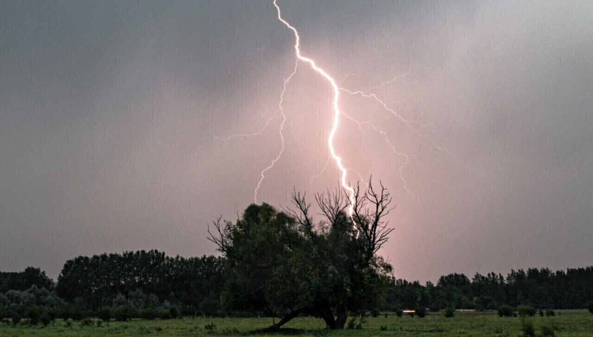

Éclair
La manifestation lumineuse d'une décharge électrique.
STORMLAB • ÉLECTRICITÉ ATMOSPHÉRIQUE
La foudre est une décharge électrique intense qui accompagne de nombreux orages.

PHÉNOMÈNE ÉLECTRIQUE
Les éclairs sont l'une des manifestations les plus spectaculaires de l'activité électrique des orages.
01 • COMPRENDRE
La manifestation lumineuse d'une décharge électrique.
Le bruit associé à l'expansion rapide de l'air chauffé.
De nombreux éclairs restent entièrement dans le nuage.
Certains éclairs se développent entre le nuage et le sol.
02 • SÉCURITÉ
Lorsqu'un orage est proche, privilégie un abri sûr.
🚨 Sécurité